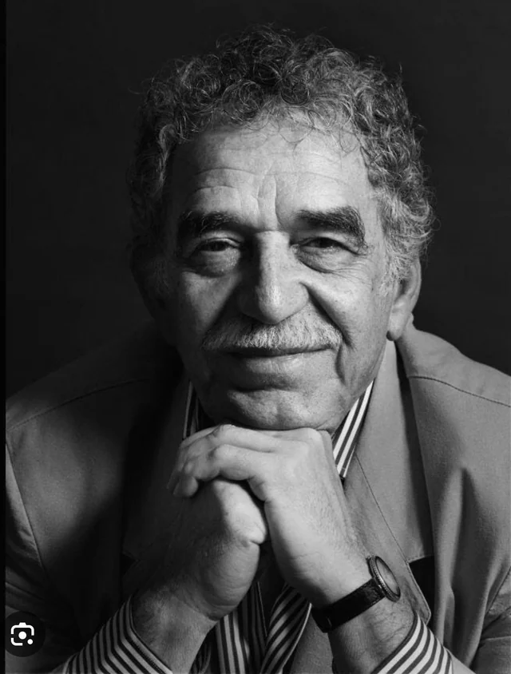

Tierra de vida
Desde las cumbres nevadas de los andes hasta las playas del caribe y el pacífico. Colombia es color, sabor y espíritu.
Desde las cumbres nevadas de los andes hasta las playas del caribe y el pacífico. Colombia es color, sabor y espíritu.
Lugares que enamoran
Murallas coloniales, mar Caribe y magia eterna
Biodiversidad sin igual
Identidad y Tradición
Colombia es un mosaico de etnias, ritmos y colores. Su riqueza cultural nace de la fusión de raíces indígenas, africanas y europeas, que dan vida a expresiones únicas en el mundo.

Ritmos declarados Patrimonio de la Humanidad que narran la vida cotidiana con acordeón, caja y guacharaca.
Costa Caribe · UNESCO 2015
Cada agosto Medellín se viste de flores. Los silleteros de Santa Elena bajan cargando silletas con miles de flores en una de las fiestas más coloridas de América.
Medellín · Antioquia · desde 1957Muisca, Quimbaya, Zenú y Calima dominaron el oro. El Museo del Oro de Bogotá alberga la mayor colección de orfebrería prehispánica del mundo.
Bogotá · 55.000 piezas
Técnicas milenarias en cerámica, tejido y orfebrería que sobreviven en manos de comunidades indígenas — guardianas de la memoria ancestral de Colombia.
Nación · Patrimonio InmaterialSabores Auténticos

Plato representativo de la costa Caribe colombiana que combina sabores del mar con el dulzor del coco.

Reconocido mundialmente por su calidad, el café ha dado identidad al Eje Cafetero, cuyo paisaje es patrimonio cultural de la UNESCO.